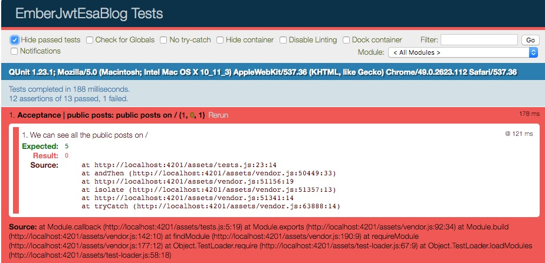

Goal:
Serve an API backed blog with Public (available to everyone) and Private posts (have to log in to see).

We are going to go through the full process for doing this project, including seting up Mirage and Testing our way through. Follow along below or grab the code on github.
ember new ember-jwt-esa-blog`
{{public-posts}} — A list of all public posts{{blog-post}} — A single post{{login-form}} — A form to help users login / logout{{private-posts}}— A list of all private postsMirage allows us to fake our API so far as that we can use for testing and development.
ember install ember-cli-mirage@beta
We'll start by configuring mirage to handle our public posts.
When we do GET /public-posts from an ajax call, we'll get a JSON API compliant object back with posts (which is exactly how our API responds). For Mirage to do this we'll need to create a publicPost mirage-model and a publicPost mirage-factory to start.
Mirage models create tables in Mirage's in memory database, while factories are the blueprints for what the data should look like in those tables.
ember g mirage-model publicPost
ember g mirage-factory publicPost
We don't have to do anything with the model out of the box.
For the factory, we'll need to describe what kind of data we'll want back. This should make the Schema from the API PublicPost(title:string, body:text, type:string).
// mirage/factories/public-post.js
import { Factory, faker } from 'ember-cli-mirage';
export default Factory.extend({
body: faker.lorem.words(),
title: faker.lorem.paragraphs(),
createdAt: faker.date.past()
});
Mirage is using faker to generate realistic fake data. Check it out for additional methods you could use in your factories.
So far, we have a fake table to store our public-posts, and a blueprint to describe what that data should look like, but we are missing a way to associate a route (e.g. GET /public-posts) to that data. So, similar to router.js in Ember we are able to describe these mock mappings in mirage/config.js.
// mirage/config.js
export default function() {
this.get('/public-posts');
}
To better understand what Mirage is doing here, I recommend reading the concerning docs or more specifically about the shorthands, which allow for such expressive statements.
Now that we've modeled PublicPosts from the backend, let's move on to write some acceptance tests to help us implement PublicPosts on the front-end.
ember g acceptance-test public-posts
(I've left notes in the comments)
import { test } from 'qunit';
import moduleForAcceptance from 'ember-jwt-esa-blog/tests/helpers/module-for-acceptance';
moduleForAcceptance('Acceptance | public posts');
test('public posts on /', function(assert) {
visit('/');
// Here is where we are telling mirage
// to stick 5 public posts, generated from
// our blueprint, into the public-post table
// available from our api
server.createList('public-post', 5);
// the server variable is something that
// mirage gives us.
andThen(function() {
// We're saying that the css class
// `.public-post` would be used on a
// display container for any public posts,
// and based on our `server.createList`,
// we exepct there should be 5
assert.equal(
find('.public-post').length,
5,
'We can see all the public posts on /'
);
});
});
And now if we ember serve and visit http://localhost:4200/tests, Yay! Failing test!

PublicPostsLet's work naïvely from the router down. This way, the errors will guide us through the implementation. I'll start by generating the application route and trying to pass in PublicPosts through the model hook.
ember g route application
And then...
// app/routes/application.js
import Ember from 'ember';
export default Ember.Route.extend({
model() {
return this.store.findAll('publicPost');
}
});
Cool, so now our tests are throwing Error: No model was found for 'publicPost'. So let's generate that:
ember g model publicPost
Since we know what attributes we're supposed to have on the model, let's dive down a level and write a unit test. While this is not 100% necessary, I think it's a good practice and helps us be intentional about what gets added/removed from the model.
What we want to test:
// test/unit/models/public-post.js
import { moduleForModel, test } from 'ember-qunit';
moduleForModel('public-post', 'Unit | Model | public post', {
});
test('has correct attributes', function(assert) {
let model = this.subject();
// Converts props on our model to array
const actualAttributes = Object.keys(model.toJSON());
// Should have the same values as this array
const correctAttributes = [
'title',
'body',
'createdAt'
];
assert.equal(
actualAttributes.length,
correctAttributes.length,
`We are expecting ${correctAttributes.lenght} attributes, and have found ${actualAttributes.length}`
);
// Loop through the keys and check them one at a time
actualAttributes.forEach((actualKey) => {
assert.equal(
correctAttributes.indexOf(actualKey) > -1,
true,
`We are expecting ${actualKey} to be in the list of correctAttributes`
);
});
});
Now let's lock the tests to Unit | Model | public post and get'em green.
import Model from 'ember-data/model';
import attr from 'ember-data/attr';
export default Model.extend({
title: attr('string'),
body: attr('string'),
createdAt: attr('date')
});

And now we can go back to filter for all...
We know we have the correct public posts model, and we have that loading with the / route, so what's left?
We need to actually display them!
// app/templates/application.hbs
{{#each model as |post|}}
<div class="public-post">
{{post.title}}
</div>
{{else}}
No Public Posts Found!
{{/each}}
:boom: passing tests!
Below is a screenshot from
pauseTest();, where we can preview Mirage doing its thing.
Let's take a moment to refactor towards the component structure we decided on about for {{public-post}}. And now, our acceptance test will help ensure we don't mess stuff up as we do.
ember g component public-posts --pod
// app/templates/application.hbs
{{public-posts posts=model}}
Notice we are changing the variable to be named posts.
// app/components/public-post/template.hbs
{{#each posts as |post|}}
<div class="public-post">
{{post.title}}
</div>
{{else}}
No Public Posts Found!
{{/each}}
Our previous acceptance test is now green, but a component integration test is blowing up.
This test was generated with our component... let's change it to be more of a sanity check. We are just going to render the component, and expect some type of class on the components wrapper for now:
import { moduleForComponent, test } from 'ember-qunit';
import hbs from 'htmlbars-inline-precompile';
moduleForComponent('public-posts', 'Integration | Component | public posts', {
integration: true
});
test('it renders', function(assert) {
this.render(hbs`{{public-posts}}`);
assert.equal(this.$('.public-posts-component').length, 1);
});
And add a CSS class name to our component wrapper to make it pass.
// app/components/public-post/component.js
import Ember from 'ember';
export default Ember.Component.extend({
classNames: ['public-posts-component']
});
:boom: Passing tests!
And now let's make one more refactor for our {{blog-post}} component.
ember g component blog-post --pod
// app/components/public-post/template.hbs
{{#each posts as |post|}}
{{blog-post title=post.title body=post.body}}
{{else}}
No Public Posts Found!
{{/each}}
At this point our tests are passing, but nothing is showing up! Let's use this moment to make use of the component integration test that was generated for us with {{blog-post}}
// tests/integration/components/blog-post/component-test.js
import { moduleForComponent, test } from 'ember-qunit';
import hbs from 'htmlbars-inline-precompile';
moduleForComponent('blog-post', 'Integration | Component | blog post', {
integration: true
});
test('it renders', function(assert) {
const title = 'Blog Post Title';
this.set('title', title);
const body = 'Now is the time for all good robots...';
this.set('body', body);
this.render(hbs`{{blog-post title=title body=body}}`);
assert.equal(this.$('.blog-post-title').text().trim(), title);
assert.equal(this.$('.blog-post-body').text().trim(), body);
});
And now, great!! Failing tests. Once we implement this functinality, we'll be sure to have generally the right thing showing on screen.
// app/components/blog-post/template.hbs
<div class="blog-post">
<h5 class="blog-post-title">
{{title}}
</h5>
<div class="blog-post-body">
{{body}}
</div>
</div>
YAY! Green tests.
We've been working out of tests this whole time, without much going on for http://localhost:4200.
Let's go ahead and cut over to our live api for a sanity check on our progress. This is the one we made in this tutorial, which I'm going to assume is running on http://localhost:3000.
If setting up the API is an issue, please let me know on twitter @ryanlabouve and I'd be happy to deploy to heroku and swap tutorial to use external link
ember g adapter application
By default, this is DS.JSONAPIAdapter, which is what we want.
Inside the environment, we'll want to configure our host name (i.e. http://localhost:3000) and make sure Mirage is only turned on for the test environment.
// config/environment.js
// Disable mirage by default
ENV['ember-cli-mirage'] = {
enabled: false
};
if (environment === 'development') {
ENV.host = 'http://localhost:3000';
}
if (environment === 'test') {
// remove host address for tests
// so the paths display omits the url
ENV.host = '';
// Turn on mirage only for testing
ENV['ember-cli-mirage'] = {
enabled: true
};
}
Then inside the generated adapter.
import JSONAPIAdapter from 'ember-data/adapters/json-api';
import config from '../config/environment';
const { host } = config;
export default JSONAPIAdapter.extend({
host
});
And now if we look at our browser, we should see a lot of posts loading from the api!
This is actually quite cool. We've implemented all of this without a live API, and then we cutover to the actually API and it just works.
Now that we have our API hooked up and public information flowing correctly, next up is working on Ember Simple Auth, Logging in and Out, and Private Posts! See ya next time!

—Ember.js & Node—
Disciple of Jesus Christ & family man. Doer of JS & maker of webs.